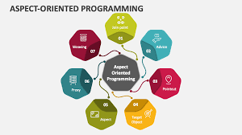

The module Software Engineering (9th Edition by Ian Sommerville) provides a comprehensive overview of the principles, methods, and practices involved in developing reliable, efficient, and maintainable software systems. It introduces key topics such as software processes, agile development, requirements engineering, system modeling, architectural and object-oriented design, testing, and software maintenance. The book also emphasizes dependability, security, and software management, including project planning, quality assurance, and process improvement. Through real-world case studies like the Insulin Pump System, Mental Health Care Management System, and Wilderness Weather Station, it illustrates how software engineering concepts apply to different types of systems.
OVERVIEW
TOPICS
Chapter 1: Introduction
This chapter introduces the basic concepts of software engineering, its importance, and the fundamental principles that guide software development.

Developed by: Michelle D. Daluz
Chapter 2: Software Process
Discusses various software process models like Waterfall, Agile, and Spiral, emphasizing the importance of planning, design, and iteration in development.

Developed by: Jaycee Hernandez
Chapter 21: Aspect-oriented software engineering
Focuses on enhancing the software process through continuous improvement strategies, metrics, and capability maturity models.
Developed by: Marco Labo-Labo
Chapter 22: Project Management
Explores project management concepts, team organization, scheduling, and risk management to ensure software project success.
Developed by: Kyle Cedrick Ferrer